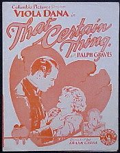

THE STANFORD THEATRE
Now Showing
·
Upcoming
·
Past
·
Search
January 10 - February 16, 2025
The Films of Frank Capra
12 bills
January 10 - 12
Lost Horizon (1937)
97 min
The Bitter Tea of General Yen (1933)
87 min
January 16
Lady for a Day (1933)
92 min
The Miracle Woman (1931)
91 min
January 17
Ladies of Leisure (1930)
102 min
The Miracle Woman (1931)
91 min
January 18

That Certain Thing (1928)
69 min
Lady for a Day (1933)
92 min
January 19
The Power of the Press (1928)
62 min
Lady for a Day (1933)
92 min
Why We Fight (1942-44)
January 23 - 24
Flight (1929)
110 min
Dirigible (1931)
102 min
January 25 - 26
It Happened One Night (1934)
105 min
You Can't Take It with You (1938)
126 min
January 30 - 31
The Younger Generation (1929)
75 min
Forbidden (1932)
83 min
February 1 - 2
Mr. Deeds Goes to Town (1936)
115 min
Mr. Smith Goes to Washington (1939)
129 min
February 6 - 7
Platinum Blonde (1931)
89 min
American Madness (1932)
75 min
February 8 - 9
State of the Union (1948)
124 min
Meet John Doe (1941)
122 min
February 13 - 16
Arsenic and Old Lace (1944)
118 min
It's a Wonderful Life (1946)
125 min